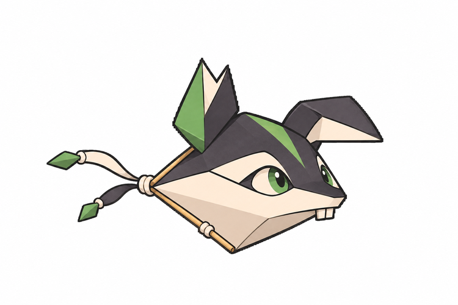
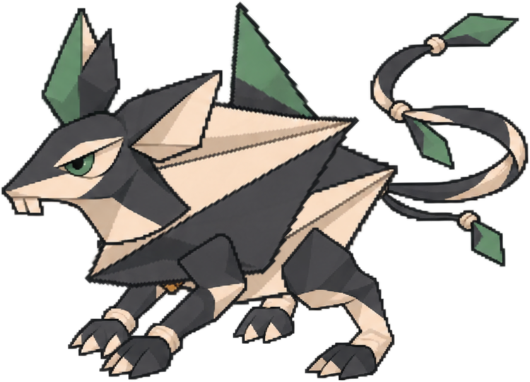
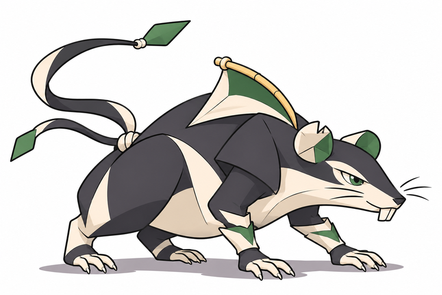
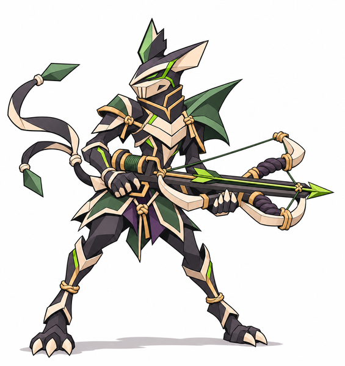

Riscotim · Bebê

Aprende a equilibrar sua construção compacta antes de adquirir apoios.
BriefBebê e jovem revisado aprovados visualmente; criança autoral preservada e adulto aprovado. Nomes novos e ligações são propostas. Sem integração.
Comparação da família · Decisões

Aprende a equilibrar sua construção compacta antes de adquirir apoios.
Brief
Base autoral preservada; maturidade é organização documental.
Brief
Aprende a ancorar os apoios e tensionar a vela; essa estrutura prepara a balista do adulto.
Brief
Transformação cavaleiresca sombria e venenosa pedida pelo autor; voto e origem continuam abertos.
Brief